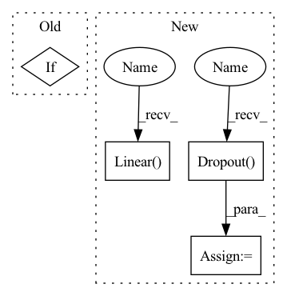

Pattern ID :1650
Before Change
def __init__(self, backbone, num_classes, use_bottleneck=True, bottleneck_dim=1024, head_bottleneck_dim=1024):
super(Classifier, self).__init__()
self.backbone = backbone
if use_bottleneck:
self.bottleneck = nn.Sequential(
nn.Linear(backbone.out_features, bottleneck_dim),
nn.BatchNorm1d(bottleneck_dim),
nn.ReLU(),After Change
self.bottleneck[0].bias.data.fill_(0.1)
// The classifier head used for final predictions.
self.head = nn.Sequential(
nn.Linear( bottleneck_dim, width) ,
nn.ReLU(),
nn.Dropout(0.5),
nn.Linear(width, num_classes)
)
// The adversarial classifier head
self.adv_head = nn.Sequential(
nn.Linear(bottleneck_dim, width),
nn.ReLU(),
nn.Dropout( 0.5) ,
nn.Linear(width, num_classes)
)
for dep in range(2):In pattern: SUPERPATTERN
Frequency: 4
Non-data size: 4
Instances Fragment ID: 4210390
Project Name: thuml/transfer-learning-library
Commit Name: 6715ce965493b31f0defccaf6c0b1a654ffd4a0a
Time: 2020-03-11
Author: JiangJunguang1123@outlook.com
File Name: dalib/adaptation/mdd.py
Class Name: Classifier
Method Name: __init__
Parent Class: nn.Module
Fragment ID: 4210391
Project Name: thuml/transfer-learning-library
Commit Name: 6715ce965493b31f0defccaf6c0b1a654ffd4a0a
Time: 2020-03-11
Author: JiangJunguang1123@outlook.com
File Name: dalib/adaptation/mdd.py
Class Name: Classifier
Method Name: __init__
Parent Class: nn.Module
Fragment ID: 4210392
Project Name: aamini/chemprop
Commit Name: ddcdae2edb70f359d1d98863532cfe51709b1391
Time: 2018-09-30
Author: swansonk.14@gmail.com
File Name: mpn.py
Class Name: MPN
Method Name: __init__
Parent Class: nn.Module
Fragment ID: 4210394
Project Name: stanford-oval/genienlp
Commit Name: ae1bf6a643f0c4ae8d6df12b291a9271e5fe4543
Time: 2020-01-18
Author: gcampagn@cs.stanford.edu
File Name: decanlp/models/identity_encoder.py
Class Name: IdentityEncoder
Method Name: __init__
Parent Class: nn.Module
Fragment ID: 4210395
Project Name: cydia2018/vit-cifar10-pruning
Commit Name: 670fb581b519a0875681d2fbf4c4ec824e7fd9a3
Time: 2020-10-27
Author: meathouse47@gmail.com
File Name: models/vit.py
Class Name: Bottleneck
Method Name: __init__
Parent Class: nn.Module